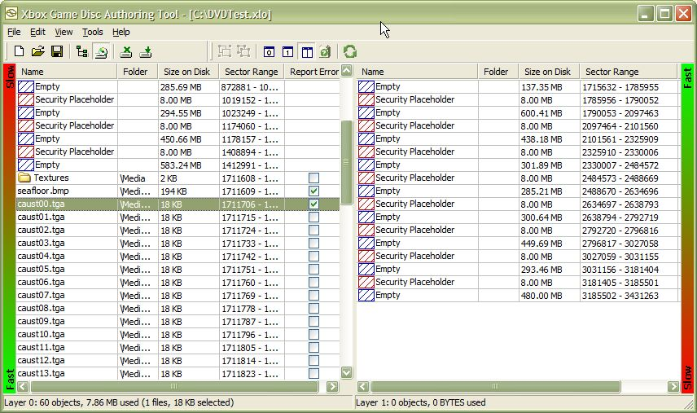
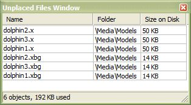
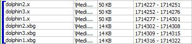

After you have selected all the files that will be included on the game disc, you can arrange how those files are laid out when they are written to the disc.
When arranging the layout of files on your Xbox game disc, use the XbGameDisc tool's Layout View. To switch to Layout View, click the Layout View button in the tool bar, or click Layout View on the View menu. Layout View is pictured here:

By default, Layout View displays only the contents of Layer 0 of the game disc. To display Layer 1, click the Show Layer 1 button in the tool bar, or click Layer 1 on the View menu, or press Ctrl+1. To display Layer 0 again, click the Show Layer 0 button in the tool bar, or click Layer 0 on the View menu, or press Ctrl+0. You may also display both layers side-by-side by clicking the Show Both Layers button in the tool bar, by clicking Both Layers on the View menu, or by pressing Ctrl+B. The image above displays both layers.
Layout View displays files in the order in which they are stored on the Xbox game disc. A colored bar along the edge of each layer of the disc represents the relative access times for media stored on the game disc. In Layer 0, files near the top of the list (physically located near the middle of the disc) are accessed more slowly than files near the bottom of the list (physically located near the outer edge of the disc). In Layer 1, this is reversed.
To change the location of a file on the game disc, simply drag and drop the file up or down the list to its new location. You may also move files from one layer of the disc to another by dragging and dropping them.
Note When you start a new session, XbGameDisc automatically lays out the files in the staging area, starting at the fastest part of Layer 0. Because XbGameDisc has no way to know the most efficient way to access your game title's data, the automatic layout may not be appropriate for your title, requiring you to change the layout accordingly.
The minimum distance between security placeholders on the disc is 256 MB. As a result, files should generally not be larger than 256 MB, or they may not fit between the security placeholders. That is not to say that files larger than 256 MB are not allowed. However, because of the security placeholders, it is not possible for more than of 13 of them to fit on the disc.
Note The maximum possible size of any one file on the disc is 1 GB per layer. Therefore, there can be at most two 1 GB files on the disc.
You may also open the Unplaced Files Window in Layout View. The Unplaced Files Window lists the files that have not been placed anywhere in the game disc layout either because of lack of space in the layout or because the files were not selected in File View. It is also possible that XbGameDisc could put files in the Unplaced Files Window if files in the same directory could not be placed in the same layer. In that event, it is highly probable that you can shuffle the files in the layout manually and create enough space for the unplaced files to fit.
To open the Unplaced Files Window, click the Show Unplaced Files button in the tool bar, or click Unplaced Files on the View menu. The Unplaced Files Window is pictured here:

To add an unplaced file to the layout, drag the file from the Unplaced Files Window to an appropriate location in the Layout View. You may also drag and drop a file from the Layout View to the Unplaced Files Window to temporarily exclude that file from the layout.
Files that are listed in the Unplaced Files Window do not appear in the game disc emulator, a premastered tape, or a premastered electronic submission package.
You can group files in the Layout View by selecting contiguous files and clicking the Group button on the tool bar, by clicking Group Files on the Edit menu, or by pressing Ctrl+G. XbGameDisc treats grouped files as a single entity; moving one grouped file moves the whole group. When you group files like this, you are telling XbGameDisc that you plan to read the files sequentially and that the tool should not split this data up or place any other data between the grouped files.
Grouped files are indicated by a blue bracket to the left of the files in the group, as shown here:

To remove files from a group, select any member of the group, then click the Ungroup button on the tool bar, or click Ungroup Files on the Edit menu, or press Ctrl+U.
Note Grouping files determines only how XbGameDisc moves those files about in the disc layout. File grouping information is not stored on the game disc in any way.
It is important to understand that grouping files can have a performance impact when you optimize your layout. If you group files together, XbGameDisc does not optimize the position of individual files in the group or the group as a whole. If, for instance, your emulation runs indicate to XbGameDisc that a particular file in the group should be moved toward the outer edge of the disc, XbGameDisc does not move the file. It leaves the entire group in place.
Also, if the total file sizes of the group as a whole is larger than 256 MB, it may not fit between the security placeholders on the disc. You must either generate a new layout for the title or decrease the size of the group. If the size of the group is greater than 1 GB, it will not fit between the security placeholders. In that event, you must make the group smaller to fit it on the disc.
During emulation, XbGameDisc can simulate read errors for a specified set of files or folders. This allows you to test how your title reacts to adverse read conditions, such as a flaw in the DVD media or a fingerprint on the disc.
To inject a simulated read error for a particular file or folder, select the check box next to that file or folder in the Report Error column. If you wish to temporarily disable error injection without unchecking all the files and folders you have currently marked, you can do so from the Emulation window.